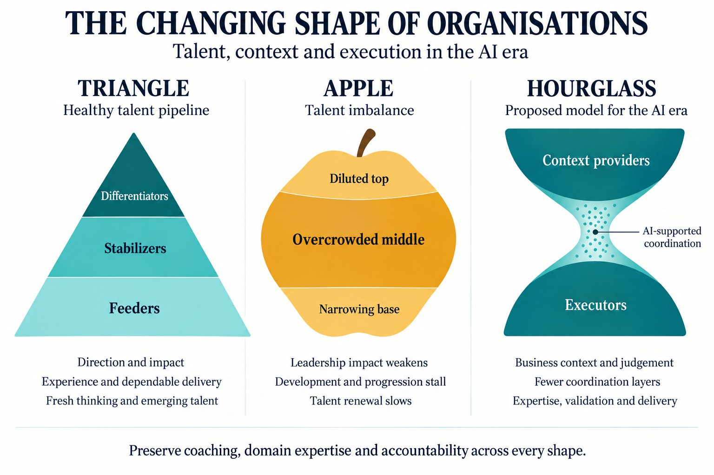

From Triangle to Apple to Hourglass
The Organisation in the AI Era

An organisation’s shape tells us where talent enters, how capability develops and where decisions get made. The familiar triangle, the distorted apple and the emerging hourglass each tell a different story. For leaders of Global Capability Centres, understanding these shapes is a practical responsibility. Each structure influences cost, execution, innovation and the development of future leaders. As businesses examine management layers and introduce AI into workflows, the central question is whether they are improving the flow of talent or simply changing the silhouette.
The book’s discussion of the talent pyramid begins with three groups: Feeders, Stabilizers and Differentiators. These describe contributions to organisational capability, rather than merely job titles. Feeders bring curiosity and fresh thinking. Stabilizers provide experience, discipline and dependable delivery. Differentiators translate strategic ambition into execution and create exceptional impact. A healthy organisation needs all three. Its strength comes from how effectively they work together and how deliberately people are developed to take on greater responsibility.
In the triangular model, a broad base of Feeders creates a continuing supply of emerging talent. These professionals need meaningful problems, ownership and access to experienced colleagues. Their questions can challenge practices that others have stopped examining. The middle layer of Stabilizers evaluates ideas, manages risks and makes promising approaches repeatable. At the top, a smaller group of Differentiators provides direction, expertise and accountability. The book argues that this balance should exist within each value stream, making talent development part of everyday delivery.
The triangle is therefore more than a staffing ratio. It is a development system. Feeders build judgement through practice. Stabilizers deepen their expertise and prepare for broader influence. Differentiators create opportunities for others while delivering business outcomes. Progression should reflect demonstrated capability and potential. When organisations reward tenure without examining contribution, or hire senior people without testing their ability to deliver, this system begins to weaken. The reporting chart may still look triangular even while the underlying talent pyramid is losing its strength.

The apple: a warning sign
This is where the book introduces the apple-shaped pyramid as a warning. The base narrows because too few early-career professionals are hired or empowered. The middle expands as people accumulate without sufficient development, movement or differentiation in performance. The top loses effectiveness when senior appointments fail to produce the expected impact. The apple describes an imbalance in talent quality and renewal. A large population of experienced professionals alone does not establish the problem; the concern is a widening gap between cost and contribution.
The consequences can reinforce one another. Limited opportunities discourage ambitious employees. Slow decisions make experimentation harder. Experienced colleagues spend more time protecting established routines and less time improving them. High-potential talent may leave when advancement appears disconnected from performance. Meanwhile, a weak intake of Feeders reduces the organisation’s capacity to renew itself. The book’s challenge to leaders is clear: identify potential, develop it and create conditions in which stronger contribution can grow. Leaving the middle unchanged can allow stagnation to become accepted practice.
The hourglass: a proposal for the AI era
Building on this framework, I see a reason for the hourglass after the advent of AI: organisations will continue to need context providers and executors, while some coordination work between them can shrink. The upper half holds people who understand customers, business priorities, domain constraints and risk. The lower half holds people who turn that direction into reliable outcomes. AI can help connect the two by supporting analysis, planning and information flow. This is a possible organisational design, rather than a universal prediction about headcount.
Context providers determine which problems deserve attention, what success means and which tradeoffs are acceptable. Their value lies in combining business understanding with judgement and accountability. Executors apply expertise, use AI tools, validate outputs and deliver results in real operating conditions. They include experienced practitioners as well as emerging talent. These contributions can overlap within one person or team. The hourglass therefore describes where value concentrates: in setting meaningful direction and making it work. Neither end can function effectively without feedback from the other.
A thinner middle. A stronger connection.
The middle narrows where its main purpose is passing instructions, consolidating updates or coordinating predictable workflows that AI can increasingly support. Yet Stabilizers and middle managers are not interchangeable. An experienced engineer who protects quality remains essential even if a reporting layer disappears. Coaching, resolving conflict and handling exceptions also need clear ownership. The opportunity is to redeploy capable people towards context, execution and development. Removing positions without assigning their essential responsibilities risks creating a bottleneck at the waist of the hourglass.
A narrow middle can also interrupt the development of future leaders. Junior professionals need feedback, examples of sound judgement and opportunities to learn from mistakes. Senior leaders cannot assume that direct access to them replaces regular coaching. An hourglass structure needs deliberate connections across its waist: mentoring, technical communities, project leadership and clear escalation routes. It also needs credible specialist careers. Employees should be able to gain recognition, responsibility and compensation through expertise without having to build a team beneath them.
Preserve coaching, domain expertise and accountability across every shape.
What GCC leaders can do now
For GCC leaders, the practical response starts with assessing each value stream. Is there a healthy flow of Feeders? Are Stabilizers improving delivery and developing others? Are Differentiators producing the impact their roles require? Use these questions to guide hiring, development and succession. Address persistent performance gaps with clear expectations, support and fair decisions. Remove duplicated approvals while protecting domain knowledge. Measure decision speed, quality, customer outcomes and internal progression alongside cost. This creates a fuller picture of whether a restructuring is strengthening the organisation.
The triangle offers a foundation for talent renewal. The apple warns of stagnation when development and performance lose momentum. The hourglass adds a new proposition for the AI era: value can concentrate around those who provide context and those who execute, with fewer layers needed to connect them. Its success depends on preserving judgement, expertise and learning across that narrower middle. I believe leaders should build towards this deliberately, helping people strengthen their contribution at either end while maintaining the connections that turn business intent into dependable outcomes and sustain future talent development.